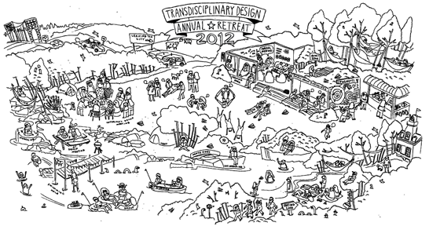

Transdisciplinary Design: Year 0.

Transdisciplinarity connotes a research strategy that crosses many disciplinary boundaries to create a holistic approach. It applies to research efforts focused on problems that cross the boundaries of two or more disciplines, such as research on effective information systems for biomedical research (see bioinformatics), and can refer to concepts or methods that were originally developed by one discipline, but are now used by several others, such as ethnography, a field research method originally developed in anthropology but now widely used by other disciplines. SOURCE: WIKIPEDIA
The Intrepid Pioneers
eulani
rachel
bland